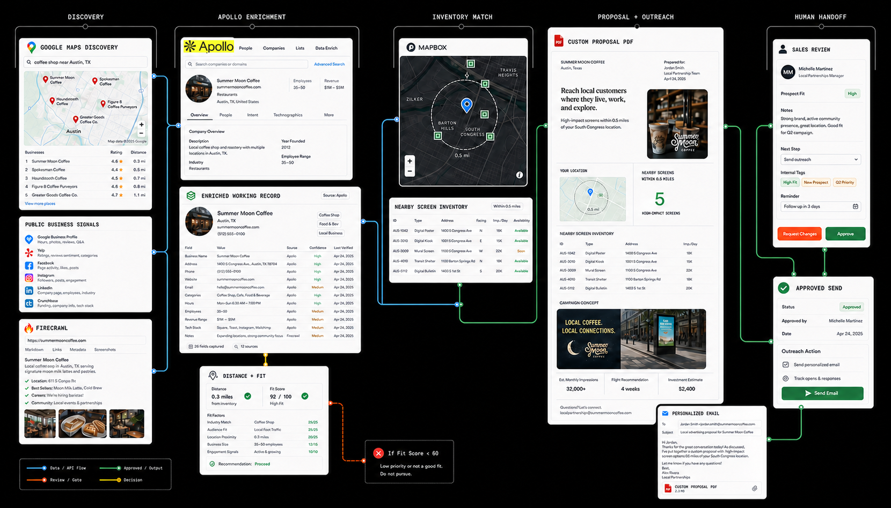

Turns local-business discovery, Apollo enrichment, and nearby media inventory into a custom proposal PDF and reviewed outreach.

01 · Purpose
Why it exists
Local media sales depends on more than finding a business near a screen. The system makes location, category, public business context, and inventory proximity inspectable in one place, helping a seller start with a credible reason to reach out rather than a generic list.
02 · Sequence
How it works
Discovery and enrichment are automated where the signal is public and repeatable; opportunity fit and outreach remain reviewed.
01
Discover businesses in Maps
Search approved geographies and categories to assemble a location-aware set of potential local advertisers.
02
Collect public business signals
Capture available website, category, location, review, and business-status context without entering private systems.
03
Enrich the working record with Apollo
Use Apollo alongside the public record to add relevant company and contact context while retaining source provenance and confidence.
04
Match nearby screen inventory
Compare business locations and intended reach with approved media inventory and meaningful proximity.
05
Generate the proposal PDF
Turn the approved business context and nearby inventory into the real proposal format: customer-specific copy, a local map, dynamic screen count, and a custom graphic or generated image.
06
Write and assemble the outreach
Draft the personalized email from the enriched record and attach the custom proposal PDF with the relevant campaign framing.
07
Review and approve the send
Route the recipient, source record, message, offer, and proposal to a sales owner; only an approved send moves to delivery.
03 · Sources
Tools and data sources
Approved public sources, Apollo enrichment, and internal inventory form the public-safe working boundary.
Google Maps
public business websites
public business listings
Apollo
geocoding
Mapbox
screen inventory
distance matching
proposal generator
working CRM records
human review queue
Output
What ships
An enriched prospect record, nearby inventory match, personalized email, proposal PDF with a local map and custom graphic or generated image, and an approved send record.
Review
What stays human
Fit, sensitivity, account ownership, opportunity priority, contact choice, message language, commercial offer, proposal accuracy, and the decision to approve the send.
04 · Boundary
Public-safe proof and constraints
The workflow uses approved business information, Apollo enrichment, and approved inventory; it does not invent contact details. Distance does not equal fit, enrichment confidence is visible, and sales approval gates every send. Public examples remove sensitive prospect records and internal commercial terms.